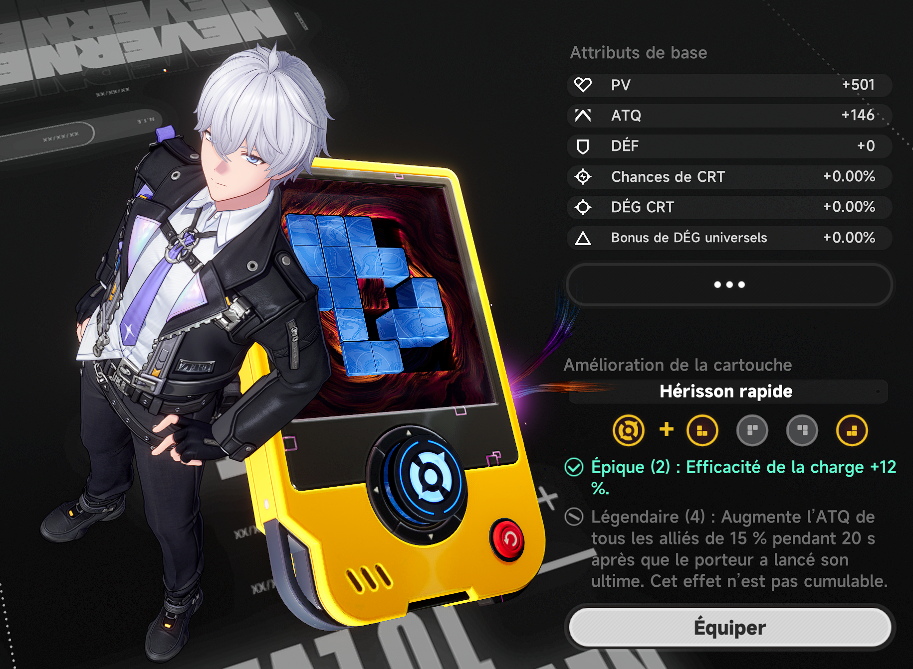
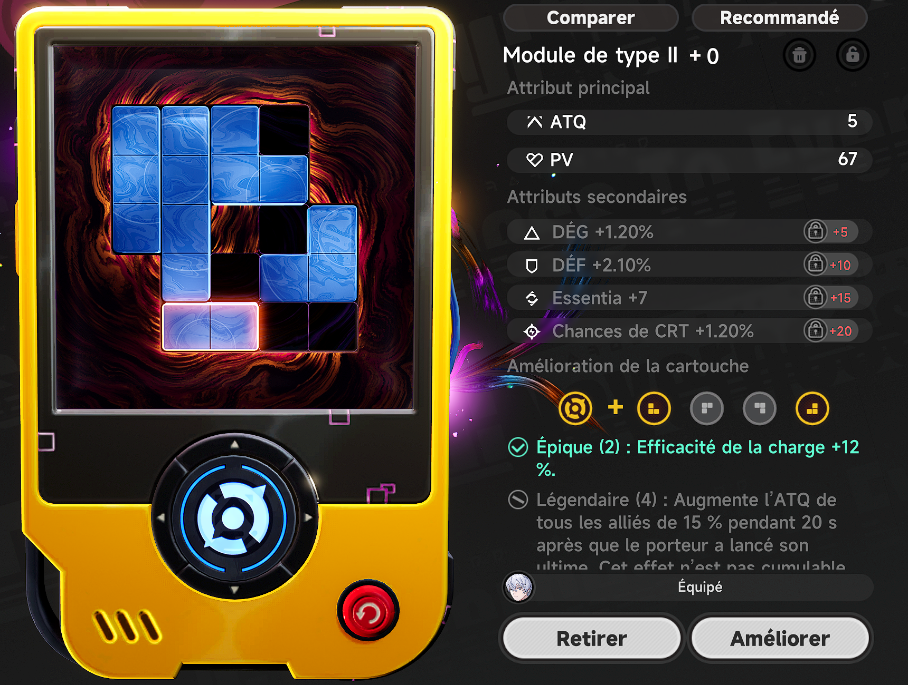
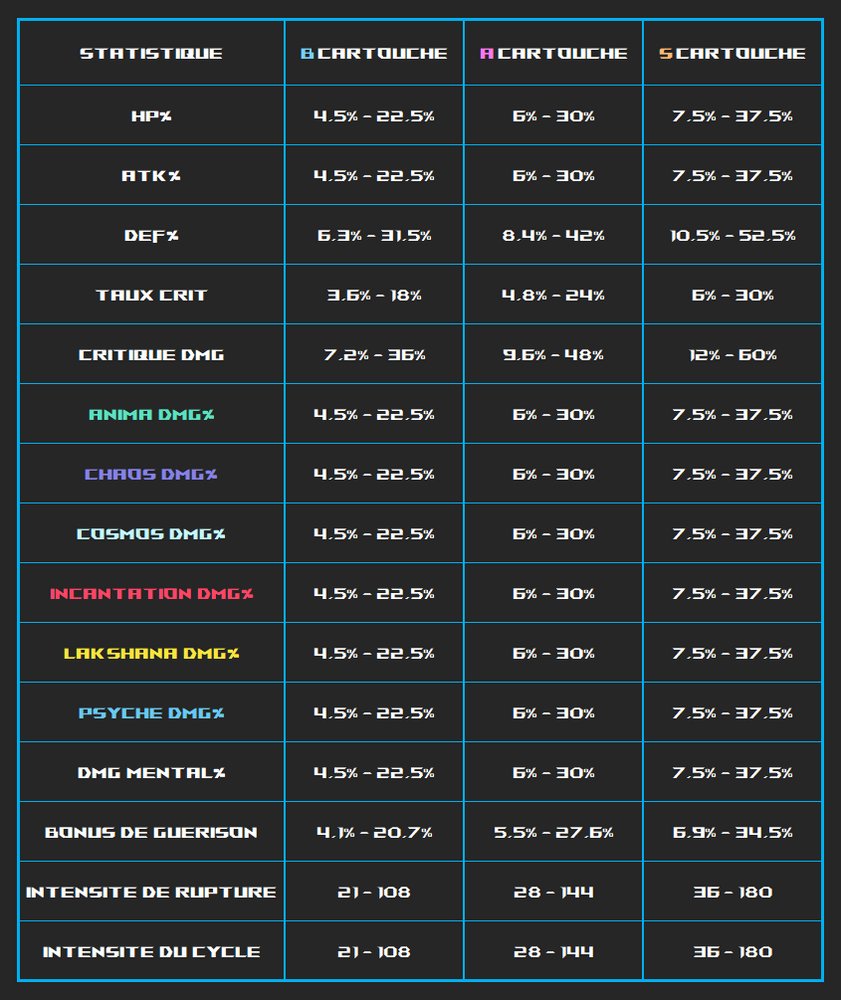
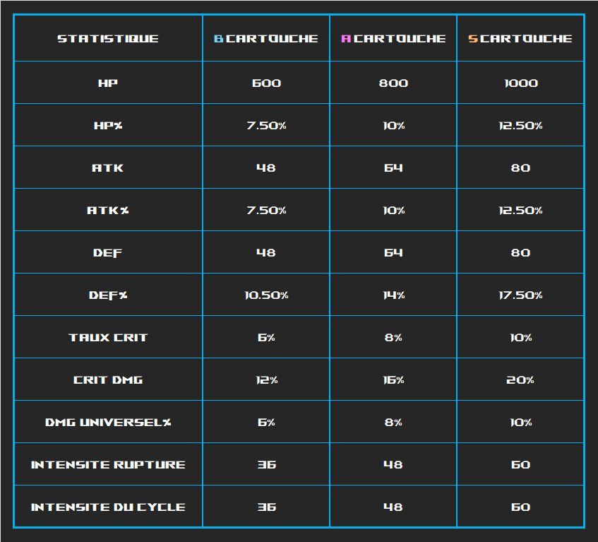
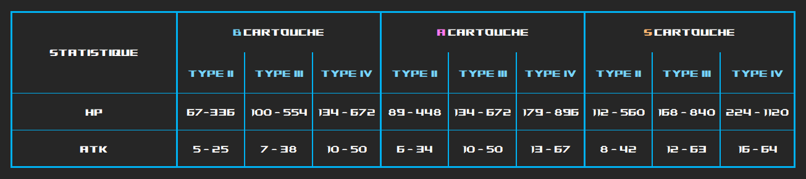
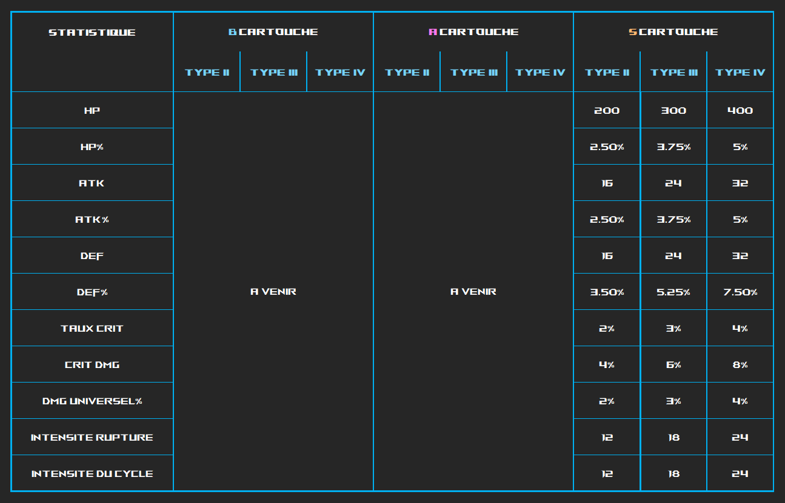

Les cartouches de NTE sont l'équipement principal des Espers après l'arc. Ce sont l'équivalent des reliques ou des artéfacts des jeux Hoyoverse. Mais ! oui oui il y a un 'mais', les joueurs voient à l'avance la totalité des statistiques et voir lesquels sont les mieux adaptées.
Tout les Espers peuvent équiper n'importe quelle cartouche et pour le moment il y en a peu (12 cartouches différentes), je voulais laisse consulter les fiches des Espers pour voir celles recommandées.
Alors ocmment obtenir des cartouches ? Et beh vous avez plusieurs possibilités, mais la méthode principale consiste à faire le Trou de Lapin, qui permet d'en obtenir ainsi que des matériaux d'amélioration.
Plus bas vous retrouverez les différentes stats et leur évolution.

Pour résumer un peu le fonctionnement des stats sur les cartouches
Les modules sont des pièces composées de blocks (à l'instar des blocks du jeu Tetris pour plus vieux ou ceux qui connaissent ^^).
Avec chaque cartouche est indiqué les modules récommandés.
Vous pouvez obtenir des cartouches avec un tirage particulier 'Rembobinage' qui se trouve dans l'interface des cartouches.

Pour résumer un peu le fonctionnement des stats sur les cartouches
Bon, voilà la partie la plus indigeste de ce guide, je présente les tableaux des statistiques !
La plage de valeur indiquée est la valeur de la statistique en fonction du niveau de la cartouche (+0 à +20).

La valeur indiquée est la valeur de la statistique maximale dés l'obtention.

La suite des tableaux de valeurs mais cette foi pour les modules
La plage de valeur indiquée est la valeur de la statistique en fonction du niveau de la cartouche (+0 à +20).

La valeur indiquée est la valeur de la statistique maximale dés l'obtention.
